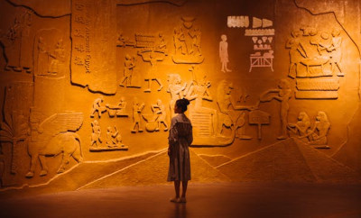

Primeira tumba de um faraó
Egiptólogos descobriram a primeira tumba de um faraó desde que a de Tutancâmon foi encontrada, há mais de um século. A tumba do rei Tutmés 2° era a última tumba real da 18ª dinastia egípcia que ainda não havia sido encontrada. Uma equipe britânico-egípcia localizou a tumba nos vales a oeste da Necrópole de Tebas, perto da cidade de Luxor, no Egito. Os pesquisadores achavam que as câmaras funerárias dos faraós da 18ª dinastia estavam a mais de 2 quilômetros de distância, mais perto do Vale dos Reis. A equipe a encontrou em uma área associada aos túmulos das mulheres da realeza, mas quando entraram na câmara funerária, ela estava decorada sinal de que se tratava de um faraó.
